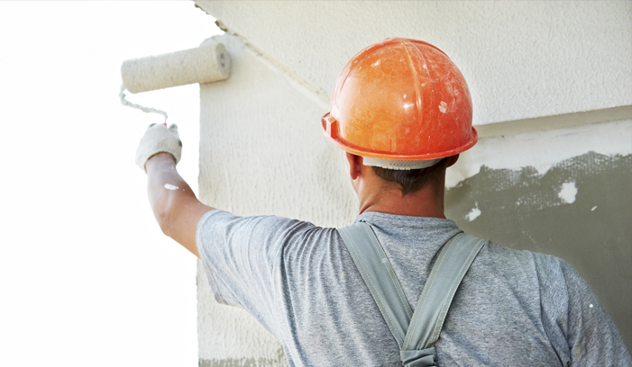

Como Pintar Interiores e Exteriores
Veja essas ideias para fazer a pintura perfeita

Antes de começar...
Para garantir o melhor acabamento final, antes de iniciar a pintura, as superfícies devem ser avaliadas, pois cada uma requer uma preparação específica. Veja abaixo:
Superfície de alvenaria nova
O que fazer: Para pintá-la, antes da cura, deve-se aplicar um selador próprio para impermeabilizar.
Superfície de alvenaria grossa
O que fazer: Pode-se melhorar a aparência com a aplicação de massa corrida (interior) ou massa acrílica (exterior). Buracos podem ser corrigidos com argamassa de cal, areia fina e água, na proporção de 1 medida de cal para 1 medida de areia fina.
Superfície de alvenaria fina
O que fazer: Aplique a massa corrida (interior) ou massa acrílica (exterior), com uma espátula larga em movimentos paralelos e longos, de cima para baixo e use lixa de massa n.º 80, protegendo o nariz e a boca com máscara durante o trabalho.
Superfície de alvenaria antiga
O que fazer: Elimine sujeiras, gorduras e poeira com água e sabão. Será necessário lixar para retirar totalmente as partes soltas.
Pintura de interiores
O que fazer: Remova todos os móveis e proteja-os com lona. Comece pintando o teto e em seguida as paredes, de cima para baixo. Pinte faixas consecutivas até completar a parede. Termine a 1ª demão antes de passar a 2ª. Lave os pincéis e rolos ocasionalmente para evitar respingos.
Pintura de exteriores
O que fazer: Evite pintar a área enquanto bate sol. Para isso, acompanhe seu movimento ao redor da casa para as paredes ficarem sempre secas e na sombra. Comece pelo ponto mais alto e, terminando uma área, volte sobre ela para corrigir marcas. Limpe os respingos de tinta.
Importante:- Bolhas e descascamentos normalmente são ocasionados por excesso de umidade. Descubra qual a origem do problema para eliminá-lo. Antes de aplicar a tinta, raspe, lixe e aplique um repelente à água (hidrofugante).
- Se precisar eliminar o mofo, higienize o local com uma solução de água e sabão para retirá-lo e use tintas resistentes ao mofo ou adicione na tinta um componente com essa propriedade.
- Para remover as películas que se formam entre as demãos, remova o brilho, óleos, gorduras e partes soltas e prepare a superfície como se fosse iniciar o trabalho novamente e pinte.